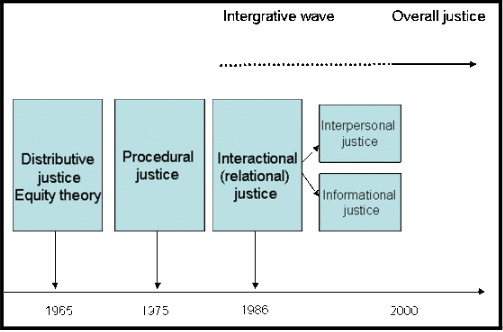

Organisational justice
Literature review on organisational justice
Organisational justice indicates the employee’s perception of fairness and transparency in the workplace and this term was introduced by Greenberg in 1987. The termconceptualise the idea of fairness and equality which need to be maintained in the workplace and the business structure can be managed properly and the employees have clear understanding regarding the job arrangements in the company (Greenberg, 1993). To have a good perception on organisational behaviour, it should educate for the importance of how employees reaction towards justness and rightness (Colquitt, Conlon, Wesson, Porter & Ng, 2001). There are many theories and concepts identified as multifarious which is related to organisational justice and among them four dimension of organisational justice is effective to explain the concept of organisational justice. The four dimensions are interpersonal, distributive, procedural and information justice and as per the concept, these dimensions are linked closely (Lee & Ashforth, 1996).
Organisational Justice
Hereby, the case study of “what happened to my work life balance?” is effective to demonstrate the four factor model of organisational justice and it provides an opportunity o suggest suitable recommendations to take stable actions so that it is possible to develop effective organisational behaviour for future in order to reduce the probability of uncertainty in organisational environment. Since last 25 years, there researchers are concerned about organisational justice and they conducted many researches by taking into account various backgrounds of economics, organisational science, law and psychology. The distributive justice refers to the fairness of payment and promotion of the employees in the workplace. The concept of distributive justice was originated from the equity theory proposed by Adams (1965), and as per the concept fairness can be maintained through social exchange theory (Adams, 1963). Fairness is mainly an outcome which can be calculated as the ratio of one’s inputs in the organisations. The major inputs of the employees are such as intelligence, education, training and experience and these are the main factors affecting the outcome of the organisation. On the basis of that outcome, the incentive structure, payment and promotion of the employees can be determined (Baker, Jensen & Murphy, 1988).
Through the study of Adams (1965), it can be evaluated that there is high significance of quality consideration on the allocation of outcomes in the organisations. The distributive justice exists in the company when there is fairness in distributing and allocating the organisational outcome. In this context, the managers need to allocate the outcome in an equitable manger so that every employee can enjoy the outcomes such as promotions and pay rise (Folger & Konnovsky, 1989). The employees expect that the compensations are distributed equally and when there is fairness and transparency in allocating the outcomes, there exist the organisational distributional justice (Christine Nirmala, & Akhilesh, 2006).
Based on numerous studies conducted on procedural justice, researchers have concluded that it refers to the situation when in the organisations, the procedures are judged fairly, and it is implemented consistently without maximising any self-interest (Bronckner & Wiesenfeld, 1996). Accurate information and proper opportunities to correct the decision are important for managing moral and ethical standard of the organisation (Trevino, Hartman & Brown, 2000). The view and perspective of organisational justice are effective to support the level of fairness in the workplace. The dimensions of organisational justice are also beneficial for developing structural features related to facilitating employee freedom of speech, appropriateness of criteria, the accuracy of the information used to arrive at a decisional outcome and decision making practice.
As a matter of fact, convening evidence demonstrates that the effects of procedural justice are most strongly observed when outcomes are unfavourable. As explained by David De Cremer “favourable outcomes may generally satisfy people, unfavourable outcomes elicit a greater need for explanation and therefore affect people’s attention in a stronger way on procedures used to reach the desired outcomes”. This perception of fairness implies that an organisations values its employees. The usage of processes which are perceived as fair boosts an employee’s self-worth ad self-esteem, as it assures them they are being provided the deserved level of attention in return for their services (Tuttle & Tuttle, 2004).
Recent studies have found, Interactional justice is the third component where it is necessary to communicate with all the employees so that it is possible to increase understandingregarding the working arrangements, building trust and loyalty among the employees (Macky & Boxall, 2007). The dimension portrays the communication level among the employees and the upper level executives of the company where all the staff members can participate fairly and share ideas and relevant information with each other.
Interpersonal justice is also important in the recent yearswhere the employees can improve their interpersonal relationship with their colleges, managers, supervisors and members so that an effective tam can be built in the organisations(Cropanzana, Bowen &Gilliland, 2007). In order to manage the organisational justice, these four dimensions need to be maintained so that it is possible for the manager to improve ethical standard of running the organisation fairly and transparently by distributing the organisational outcome equally among the employees (McManus, 2006).
The informational justice also must be maintained in the organisation, where the managers and super visors are bound to share relevantinformation with the employees as the staff members has the rightto understand the rules and regulations of the company(Colquitt, 2001; Lucas, Kamble, Shengtao & Zhdanova, 2016). The organisational justice overall plays an important role in managing job satisfaction of the employees and maintaining the commitment of the organisation (Bakhshi, Kumar & Rani, 2009). The interactional justice in this regard is strongly associated with the relationship between supervisors and subordinates, satisfaction level of the employees, quality and commitment of the companies (Huong, Zheng & Fujimoto, 2016; Jawahar, 2002). Through managing these factors, it is possible for the organisations to manage the workplace and retain the employees by fulfilling their needs and preferences.
Analysis of organisational justice
It is necessary to demonstrate the case study of “what happened to my work life balance?” so that it is possible to analyse the organisational justice. There are many organisational factors which are behaviour of the leaders and managers, rules and industrial standard, employment contract, job responsibilities and organisational culture, and these have direct impacts on the perception of the employees in the organisation. As per the theory of organisational justice, distributive justice refers when the employees get successful promotions and incentives for their contribution in the organisation. For example, Jessica got promotion within short time span as her contribution was beneficial as the organisation can maximise its profitability during Jessica’s leadership. The leadership skill of Jessica as well as managerial decision making practice and excellent working practice are helpful for Jessica to meet the organisational commitment. Jessica expressed that she is compensated fairly for her contribution in the organisation as the management team took the decision to promote Jessica to the managerial post. Change of new environment further provides a scope to Jessica to balance between work and life. Jessica was guaranteed by her senior manager, Smith and Smith ensured that her personal interest was aligned with the organisational policy. Jessica knew that Smith will not encourage the disturbances in working life of Jessica when she was busy in managing parental duties. These disturbances lead to frustration and stress in Jessica’s life. Due to verbal agreements with Jessica, Smith may face further difficulties in managing organisational performance. There are many studies in organisational justice which are helpful top analyse this case. There is no such fairly circumstances due to lack of moral and ethical understanding though she was confident about team’s performance to complete the necessary work proficiently. As per the above case study, it can be stated that there exist interactional justice between Jessica and the senior manager Smith for which the other problems such as internal conflicts and employee’s resistance to change may arise. It was the duty of Smith to explain the working arrangement, time table, working time, work pressure, extensive working hours and flexibility of working time so that Jessica has clear understanding regarding the company’s rules and regulations. As per the organisational justice, there is lack of initiatives that the organisation took and Jessica’s perception indicates that there is no fair implementation procedure to manage the organisational justice.
Recommendations for improving organisational justice
In order to improve the organisational justice, it is necessary to recommend some suitable suggestions so that it is possible to develop suitable organisational culture where all the staff members can work positively. Previously, lack of fairness, inefficiency and injustice are the main issues where the managerial staff members fail to make effective decisioncooperatively and thus it is required to develop effective tactics to manage organisational justice. As per the above analysis, Jessica needs to manage the internal conflicts as well as necessitate clear and proper policies in the workplace where proper rules and regulations should be developed and strictly adhered. The recommendations are such as, a. There is communication gap between Jessica and Smith and it is interactional injustice. Jessica thought that the explanation provided by Smith was inadequate. Jessica thought that his team is able to perform better to meet the organisational objective, but Jessica found it unreasonable. It is necessary to improve communication in the workplace so that the managers and other staff members can respect each other, cooperate for maximising the organisational success and provide adequate and sufficient explanation for certain outcomes and actions in the workplace. Respect, positive attitude and transparency in sharing explanation are also need to be maintained in the workplace so that trust and loyalty can be built among the team members. b. Inconsistencies among the work arrangements is another issue where Smith fail to analyse the organisational outcomes and in this regard, it is necessary to develop an effective agreement with all the employees, proper written agreement with all the staff members in the workplace is the best tactic to improve trust and loyalty among the employees as well as the staff members also can understand the working arrangements in the organisation. Clear understanding between the parties, employee and employees legally ensures that the employees are concerned about the organisational arrangements and they have clear understanding regarding their job responsibilities. c. In the recent years, the management team is concerned to determine whether the employees can balance between their inputs to outcome ratio. In this regard, as per the case study, Jessica requested to reduce the work pressure and to shorten the working time. It is difficult to handle the situation and it further worsen the case where there may raise other issue such as lack of trust among the employees, internal conflicts and resistance to change, hereby, it is necessary to identify the needs of the employees and maximise their value by fulfilling their requirements so that they can work positively with freedom and harmony. The issue may lead to organisational injustice and in this context, Smith needs to take initiative for fulfilling the needs and preferences of Jessica and manage work pressure so that Jessica become interested to work positively in the organisation.
Reference List
- Adams, J. (1963). Towards an understanding of inequity. The Journal Of Abnormal And Social Psychology, 67(5), 422-436. http://dx.doi.org/10.1037/h0040968 Baker, G. P., Jensen, M. C., & Murphy, K. J. (1988). Compensation and incentives: Practice vs. theory. The journal of Finance, 43(3), 593-616.
- Bakhshi, A., Kumar, K., & Rani, E. (2009). Organizational justice perceptions as predictor of job satisfaction and organization commitment. International journal of Business and Management, 4(9), 145.
- Brockner, J., & Wiesenfeld, B. M. (1996). An integrative framework for explaining reactions to decisions: interactive effects of outcomes and procedures. Psychological bulletin, 120(2), 189.
- Christine Nirmala, M., & Akhilesh, K. (2006). An attempt to redefine organizational justice: in the rightsizing environment. Journal Of Organizational Change Management, 19(2), 136-153. http://dx.doi.org/10.1108/09534810610648870
- Colquitt, J. A., Conlon, D. E., Wesson, M. J., Porter, C. O., & Ng, K. Y. (2001). Justice at the millennium: a meta-analytic review of 25 years of organizational justice research. Journal of applied psychology, 86(3), 425.
- Cropanzana, R., Bowen, D. E., & Gilliland, S. W. (2007). The management of organizational justice. The Academy of Management Perspectives, 34-48.
- Folger, R., &Konovsky, M. A. (1989). Effects of procedural and distributive justice on reactions to pay raise decisions. Academy of Management journal, 32(1), 115-130.
- Jawahar, I. (2002). A Model of Organizational Justice and Workplace Aggression. Journal Of Management, 28(6), 811-834. http://dx.doi.org/10.1177/014920630202800606 Huong, L., Zheng, C., & Fujimoto, Y. (2016). Inclusion, organisational justice and employee well-being. International Journal Of Manpower, 37(6), 945-964. http://dx.doi.org/10.1108/ijm-12-2015-0212
- Jones, T. M. (1991). Ethical decision making by individuals in organizations: An issue-contingent model. Academy of management review, 16(2), 366-395.
- Landy, F. J., & Conte, J. M. (2016). Work in the 21st century, Binder ready version: An introduction to Industrial and Organizational Psychology. John Wiley & Sons.
- Lee, R. T., &Ashforth, B. E. (1996). A meta-analytic examination of the correlates of the three dimensions of job burnout. Journal of applied Psychology, 81(2), 123.
- Lind, E. A. (2001). Fairness heuristic theory: Justice judgments as pivotal cognitions in organizational relations. Advances in organizational justice, 56(8).
- Lucas, T., Kamble, S., Shengtao, M., Zhdanova, L., & Wendori, C. (2016). 10.1177/0022022115615962. Jorunal Of Cross Cultural Psychology, 47(2), 234-248. http://dx.doi.org/10.1177/0022022115615962
- McManus, J. (2006). Leadership: Project and human capital management. Elsevier
- Trevino, L. K., Hartman, L. P., & Brown, M. (2000). Moral person and moral manager: How executives develop a reputation for ethical leadership. California management review, 42(4), 128-142.
- Tuttle, D. W., & Tuttle, N. R. (2004). Self-esteem and adjusting with blindness: The process of responding to life's demands. Charles C Thomas Publisher.